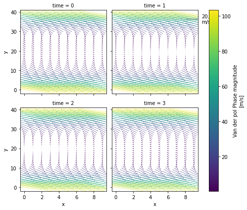

Anderson Banihirwe#
Currently, I am working as a software engineer in Computational & Information Systems Lab (CISL) at the National Center for Atmospheric Research (NCAR). On the interwebs, I go by @andersy005.
I’ve been extremely fortunate to work in realms that allow me to cross institutional and geographic boundaries to collaborate on tools and research software. More generally I contribute to and maintain several libraries within the open source scientific Python stack, particularly around improving scalability of Python tools in order to (1) handle large scale datasets on High Performance Computing and Cloud Computing platforms and (2) move the open science paradigm forward.
Recent Posts#
See the blog archives for a more complete list.
2022-03-06 - ¬´ Multitude de Stromae ¬ª - Des morceaux aussi forts sur des sujets si primordials üé∂
J‚Äôai pass√© le week-end en ecoutant en boucle l‚Äôint√©gralit√© du nouvel album de Stromae, intitul√© ‚ÄúMultitude‚Äù. L‚Äôalbum est sublime. Les morceaux, les instrumentals sont sensationnels. Les rythmes, les th√®mes abord√©s (la d√©pression, la solitude, le suicide, la maladie, la prostitution, le f√©minisme, l‚Äôabandon, etc‚Ķ) sont bien √©quilibr√©s üëèüèΩüôèüèΩ!

2021-06-04 - Dictionary Merge and Update Operators in Python 3.9
When it comes to merging two dictinaries in Python, I find myself googling “how to merge two dictionaries” very often. Every time I land on this StackOverflow answer. This answers recommends using the dictionary unpacking feature:
2021-03-13 - ¬´ Mesdames ¬ª - Parce que l‚Äôavenir appartient √† celles qu‚Äôon aime trop üé∂
Ça fait des années que je n’ai pas parlé français ou que j’ai écrit en français. Mon excuse numéro un, c’est que je réside dans un pays anglophone. Et à cause de ça, je n’ai pas l’occasion d’utiliser (parler, écrir) la langue régulièrement. Pourtant, j’ai plein d’occasions de savourer:
2021-02-27 - How to Generate Wildcard SSL Certificate using Let’s Encrypt/Certbot on CentOS
Today I wanted to generate a wildcard SSL certificate for a service I was working on. Luckily, Let’s Encrypt’s ACME v2 production endpoint makes it so easy to generate wilcard certificates (for more details on this feature, see this post). Below are the steps I used to generate a wildcard certificate.

2021-02-26 - üöÄ Xarray v0.17.0 is here!
The new version of xarray comes with plenty of bug fixes and support for a number of great new features. In this post, I am going to discuss some of the new features I am most excited about.
2021-02-21 - Freedom of Cryptography
Today I learned that if you could travel back to the early 1990s with the contents of this git repository, you would have had to become a licensed arms dealer üòÆ ‚Äîthe govt certainly would have denied you an export license‚Äî before you could post the source code (or any work that featured the source code) on the internet.
2021-01-14 - Function Expressions in JavaScript
I’m currently learning JavaScript, and here are a few things I learned about function expressions in JavaScript ;)
2021-01-09 - How to set up a wildcard subdomain on Google Domains
Today, I was working with dokku, and I found myself in need of a wildcard subdomain. A wildcard DNS record is a record that will match requests for non-existent subdomains. For instance, if you set a wildcard DNS record to
*.example.com, and a user requestsrandom.example.comorfoo.example.com, etc.. the requests will be forwarded to whichever server*.example.compoints to.
2021-01-07 - How to merge two or more disk partitions on Centos 7
I’ve been working with centos 7 virtual machine provisioned via VMware’s vrealize suite. One thing I particulary dislike is how the storage disk gets partitioned into tiny partititions during the VM provisioning:
2020-12-16 - On Maurice Hilleman
I spent today’s evening listening to The Great Vaccinator episode from Radiolab podcast. This episode is about Maurice Hilleman, an amazing microbiologist who is known today as the father of modern vaccine. Hilleman is credited with having saved more lives than any other scientist because he was responsible for developing more than half of the vaccines (measles, mumps, meningitis, etc…) children receive today.
2020-12-09 - Advent of Code - Day 9: Encoding Error
With your neighbor happily enjoying their video game, you turn your attention to an open data port on the little screen in the seat in front of you.
2020-12-08 - Advent of Code - Day 8: Handheld Halting
Your flight to the major airline hub reaches cruising altitude without incident. While you consider checking the in-flight menu for one of those drinks that come with a little umbrella, you are interrupted by the kid sitting next to you.
2020-12-07 - Advent of Code - Day 7: Handy Haversacks
You land at the regional airport in time for your next flight. In fact, it looks like you’ll even have time to grab some food: all flights are currently delayed due to issues in luggage processing.
2020-12-06 - Advent of Code - Day 6: Custom Customs
As your flight approaches the regional airport where you’ll switch to a much larger plane, customs declaration forms are distributed to the passengers.
2020-12-05 - Advent of Code - Day 5: Binary Boarding
You board your plane only to discover a new problem: you dropped your boarding pass! You aren’t sure which seat is yours, and all of the flight attendants are busy with the flood of people that suddenly made it through passport control.
2020-12-04 - Advent of Code - Day 4: Passport Processing
You arrive at the airport only to realize that you grabbed your North Pole Credentials instead of your passport. While these documents are extremely similar, North Pole Credentials aren’t issued by a country and therefore aren’t actually valid documentation for travel in most of the world.
2020-12-03 - Advent of Code - Day 3: Toboggan Trajectory
With the toboggan login problems resolved, you set off toward the airport. While travel by toboggan might be easy, it’s certainly not safe: there’s very minimal steering and the area is covered in trees. You’ll need to see which angles will take you near the fewest trees.
2020-12-02 - Advent of Code - Day 2: Password Philosophy
Your flight departs in a few days from the coastal airport; the easiest way down to the coast from here is via toboggan.
2020-12-01 - Advent of Code - Day 1: Report Repair
After saving Christmas five years in a row, you’ve decided to take a vacation at a nice resort on a tropical island. Surely, Christmas will go on without you.
2020-11-30 - Migrating from fastpages to sphinx-based blog
After a few months on fastpages hosted on GitHub pages, all the content I have published on my blog is now being built with sphinx hosted on Github pages. This sphinx-based redesign was inspired by this blog post by Chris Holdgraf. Thank you üôèüèΩ, Chris!
2020-08-28 - Chadwick Boseman: Rest Easy King T‚ÄôChalla. Wakanda üôÖüèæ‚Äç‚ôÇÔ∏è forever
Chadwick Boseman:

2020-08-02 - Dizzy - The Sun and Her Scorch: You don’t just hear it, you feel it
Two years ago I stumble upon indie music, and have never looked back since then. Today, I love indie music for how true to the soul it is. One of my favorite indie artists is Dizzy, a Canadian indie alt-pop four-piece band. Dizzy recently released their new record The Sun and Her Scorch. It is so beautiful! My top two songs on this record are:
2020-01-21 - A Knitting Weekend with Dash and Python
For the last few months, I‚Äôve become a huge fan of the quiet weekend, the weekend when no plan is the plan, and you are in no hurry at all. I woke up on Saturday morning, and I decided that this weekend was going to be a quiet one. After watching a late morning football game from the English Premier League ‚Äì yup, I refuse to call it soccer üòÄ ‚Äì I decided to write some code-nothing big, just a few lines of codes to improve my experience with Dash, a tool that I‚Äôve been using for a few months.

2019-07-21 - Reflecting on SciPy 2019: My first SciPy, definitely not my last
It’s been a week since SciPy 2019 conference came to a close. I had the pleasure of speaking at SciPy 2019 about interactive supercomputing with Dask and Jupyter. I am so thankful for the chance to speak in the Earth, Ocean, Geo and Atmospheric Science track! Here’s a recording of my talk: